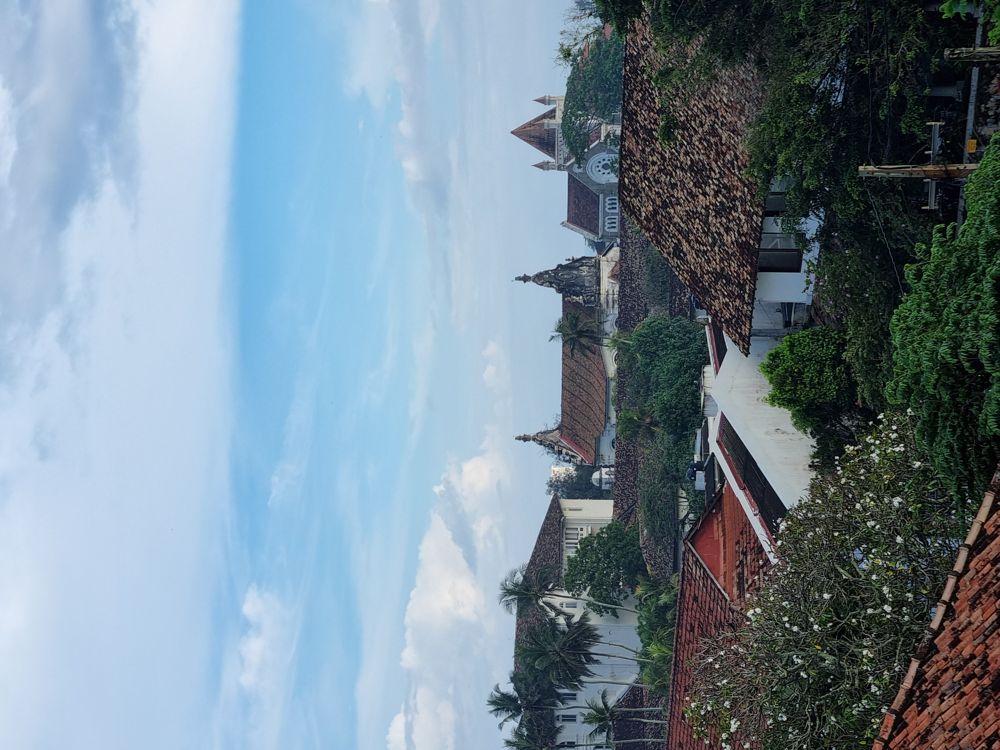
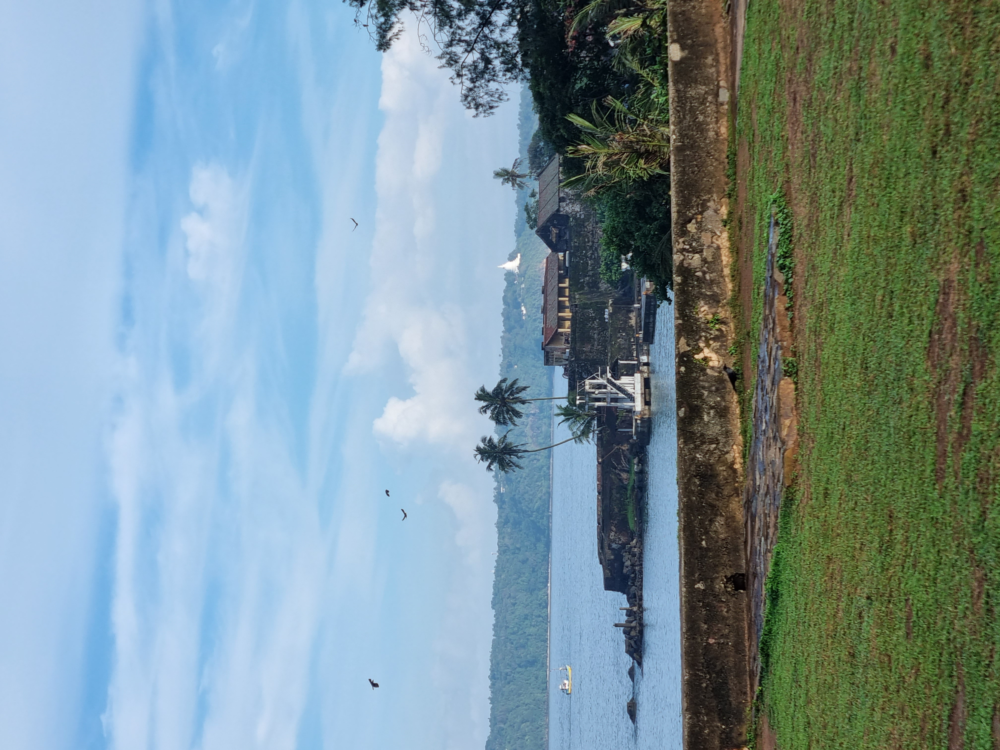
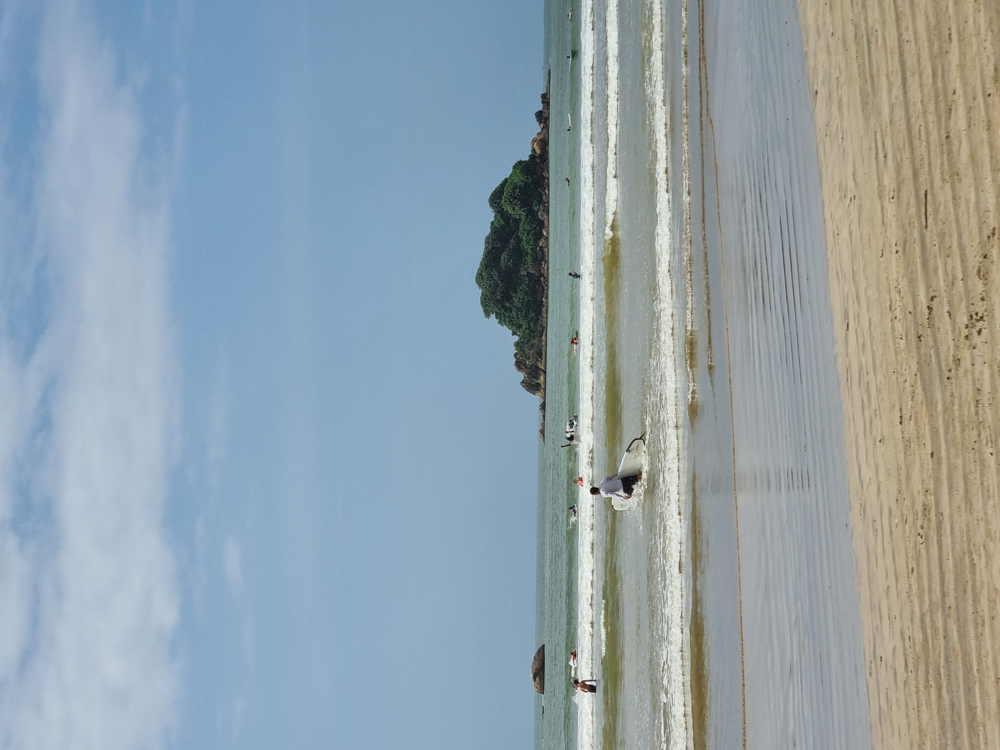
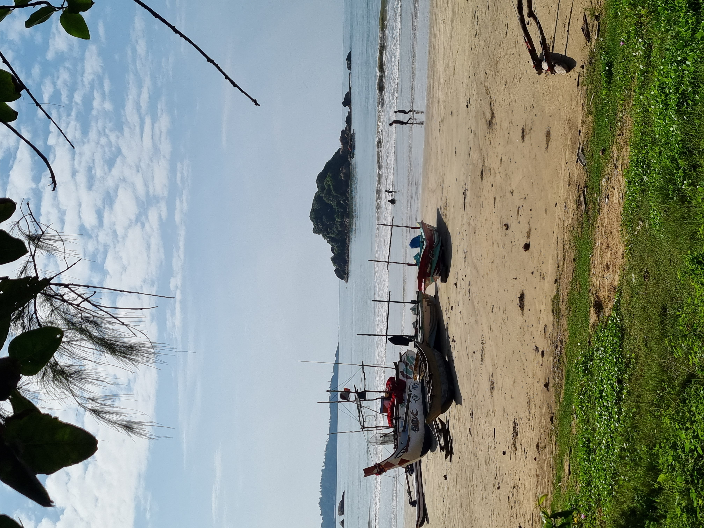

raveling to India can be an unforgettable experience that immerses you in a rich tapestry of culture, history, and natural beauty. From the bustling streets of Delhi to the serene backwaters of Kerala, India offers a wealth of diverse and unique destinations to explore. Whether you're seeking adventure, relaxation, or a chance to learn about a fascinating new culture, a trip to India can be an incredible journey that stays with you for a lifetime. Traveling to India can be an unforgettable experience that immerses you in a rich tapestry of culture, history, and natural beauty. From the bustling streets of Delhi to the serene backwaters of Kerala, India offers a wealth of diverse and unique destinations to explore. Whether you're seeking adventure, relaxation, or a chance to learn about a fascinating new culture, a trip to India can be an incredible journey that stays with you for a lifetime. Traveling to India can be an unforgettable experience that immerses you in a rich tapestry of culture, history, and natural beauty. From the bustling streets of Delhi to the serene backwaters of Kerala, India offers a wealth of diverse and unique destinations to explore. Whether you're seeking adventure, relaxation, or a chance to learn about a fascinating new culture, a trip to India can be an incredible journey that stays with you for a lifetime. Traveling to India can be an unforgettable experience that immerses you in a rich tapestry of culture, history, and natural beauty. From the bustling streets of Delhi to the serene backwaters of Kerala, India offers a wealth of diverse and unique destinations to explore. Whether you're seeking adventure, relaxation, or a chance to learn about a fascinating new culture, a trip to India can be an incredible journey that stays with you for a lifetime. Traveling to India can be an unforgettable experience that immerses you in a rich tapestry of culture, history, and natural beauty. From the bustling streets of Delhi to the serene backwaters of Kerala, India offers a wealth of diverse and unique destinations to explore. Whether you're seeking adventure, relaxation, or a chance to learn about a fascinating new culture, a trip to India can be an incredible journey that stays with you for a lifetime.




